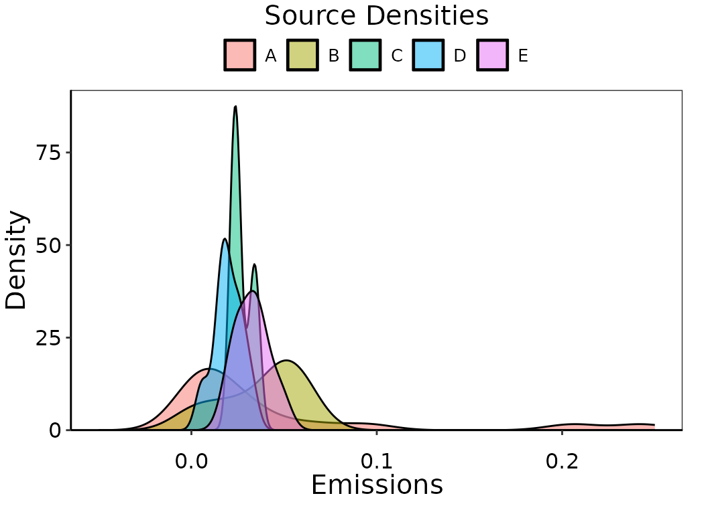
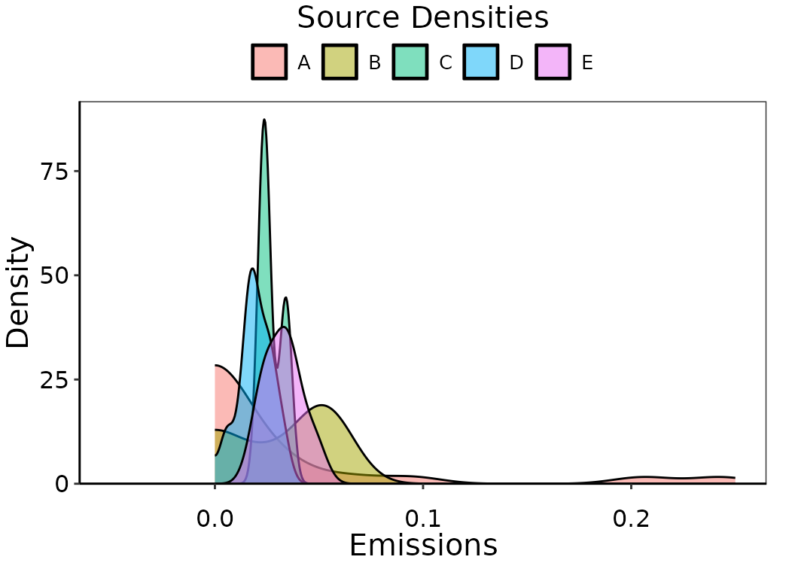
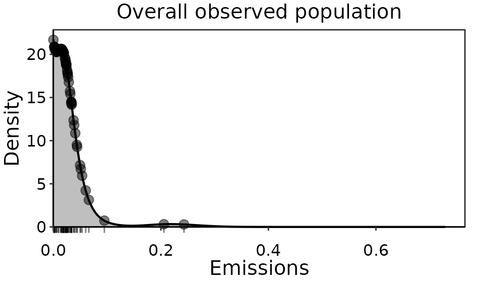
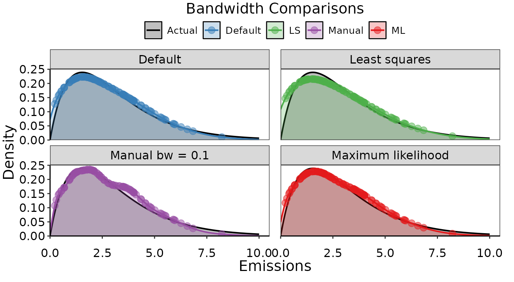
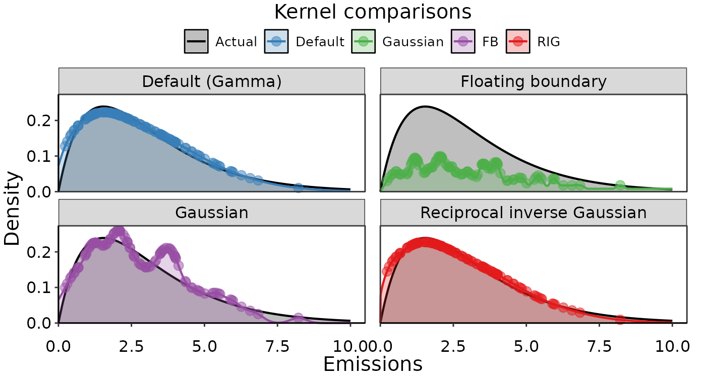

Introduction
This vignette describes the use empirical density functions that are used to evaluate if the probability density function of emissions data are a good representation to use for the Upper Predictive Limit (UPL) calculation for standards. Fitting a probability density function is a necessary step for calculating the UPL. We may only have a limited sample of emissions observations, but the probability density function describes how likely an emission at any value is to occur. The y-axis is density, and relates to likelihood or frequency of observation. The x-axis is the emission value. The density can be interpreted as a smoothed-curve version of a histogram. They should have similar shapes if appropriate bandwidths are used. The higher the density, the more likely an emission value is. The scale of the density on the y-axis is unimportant, since it is always set such that the area under the curve of the probability density function sums to 1. If it does not integrate to 1, it is not a proper probability density function. Once the probability density at all emission values is defined, we can calculate the UPL as the upper 99th percentile of an average of a number of future emissions.
The best way to both visualize the likelihood of emission observations and evaluate the probability density function used for UPL calculations is to compare to empirical densities.
Example
We will look at some synthetic data generated with a mixture of Normal and Lognormal distributions for 5 sources.
set.seed(1)
emiss_ln1 = rlnorm(18, meanlog = log(0.01), sdlog = 2)
source1 = rep("A", 18)
emiss_ln2 = rlnorm(6, meanlog = log(0.02), sdlog = 1.2)
source2 = rep("B", 6)
emiss_ln3 = rlnorm(3, meanlog = log(0.025), sdlog = 0.5)
source3 = rep("C", 3)
emiss_n4 = rnorm(18, mean = 0.02, sd = 0.01)
source4 = rep("D", 18)
emiss_n5 = rnorm(12, mean = 0.03, sd = 0.01)
source5 = rep("E", 12)
emissions = c(emiss_ln1, emiss_ln2, emiss_ln3, emiss_n4, emiss_n5)
sources = c(source1, source2, source3, source4, source5)
dat_emiss = tibble(emissions = emissions, sources = sources)First we want to look at density plots of the emission observations
by source. This is easy to do with ggplot2::geom_density(),
which uses stats::density() and can take additional
arguments related to how the density is determined such as the bandwidth
bw, kernel kernel, and known upper and lower
limits in bounds. By default, geom_density()
uses no bounds, a gaussian kernel, and a rule-of-thumb method (not
recommended) of arriving at a bandwidth (Silverman B. W. 1986. Density
Estimation p.48 eq 3.31). For this example we will plot the density
using ggplot2::geom_density() by source. The
UPLforOAR package includes several ggplot2
themes designed for density figures. The figure below uses
multi_source_theme().
ggplot(aes(emissions, fill = sources), data = dat_emiss)+
geom_density(alpha = 0.5, trim = FALSE)+
multi_source_theme()+
scale_x_continuous(limits =c(-0.05, 0.25))+
scale_y_continuous(expand = expansion(mult = c(0, 0.05)))+
ggtitle("Source Densities")+
ylab("Density")+xlab("Emissions")+
labs(fill = 'Top sources', color = 'Top sources')
Observation density of simulated emissions by source.
Note that the density curves for some sources extend below zero, even
though all of the emissions are positive. This is not ideal, since we
know that emissions cannot be negative. Let’s plot this again but set a
lower bound with bounds = c(0, Inf). Note the change in the
shape of the density curve now that there isn’t any extrapolation past
zero. The behavior that ggplot uses to accommodate bounds
for geom_density() involves reflecting the density back
across the boundary. This is alright, but there are better methods that
use density estimators specific for bounded circumstances.
ggplot(aes(emissions, fill = sources), data = dat_emiss)+
geom_density(alpha = 0.5, trim = FALSE, bounds = c(0, Inf))+
multi_source_theme()+
scale_x_continuous(limits = c(-0.05, 0.25))+
scale_y_continuous(expand = expansion(mult = c(0, 0.05)))+
ggtitle("Source Densities")+
ylab("Density")+xlab("Emissions")+
labs(fill = 'Top sources', color = 'Top sources')
Observation density of simulated emissions by source, bounded strictly by 0.
Next, we will use a different way of plotting densities that is more
appropriate. The default settings in obs_density() are
designed to be compatible with typical emissions data, such as
appropriate kernel types, bandwidths, bounds, and estimators, for
non-zero data, as well as a better default bandwidth estimator.
Furthermore, we can store the results directly in our environment rather
than them being inside the ggplot object.
obs_dens_results = obs_density(data = dat_emiss)
Obs_onPoint = obs_dens_results$Obs_onPoint
obs_den_df = obs_dens_results$obs_den_dfThe figure below shows the overall observation density of the
combined source population, of which it is our goal to determine an
appropriately representative likelihood distribution from which to
calculate the UPL. This figures uses pop_distr_theme() and
plots the obs_density() results above using
ggplot2::geom_line() and ggplot2::geom_line().
The emission observations themselves are indicated as points and as a
rug underneath the plot.
ggplot(data = Obs_onPoint)+
geom_line(data = obs_den_df, aes(y = ydens, x = x_hat),
size = 0.75, color = 'black')+
geom_area(data = obs_den_df, aes(y = ydens, x = x_hat),
alpha = 0.25, fill = 'black')+
geom_point(aes(y = ydens,x = emissions),
size = 3, alpha = 0.5, shape = 19, color = 'black')+
ylab("Density")+xlab("Emissions")+
ggtitle("Overall observed population")+
pop_distr_theme()+
scale_x_continuous(expand = expansion(mult = c(0, 0.05)))+
scale_y_continuous(expand = expansion(mult = c(0, 0.05)))+
coord_cartesian(clip = 'off')+
geom_rug(sides = 'b', aes(x = emissions), data = dat_emiss,
alpha = 0.5, outside = TRUE, color = 'black')
Observation density of IIS HCl emissions top performers overall population.
Details
In most situations, we will want more control over the density than
ggplot2::geom_density() provides, and we will want to use
the observation densities outside of the plot later on. For example, all
emissions data will be bounded by 0 and will often have an upper bound
as well. Due to the strictly positive nature of emissions data, a
gaussian kernel is not often a good choice. There are numerous types of
empirical density functions in R and density estimation is an extensive
body of research in its own right. Given an appropriate choice of kernel
and bandwidth, the results using different methods are very similar.
We recommend the obs_density() function in
UPLforOAR, which builds on the
np::npuniden.boundary() function, a more accurate density
function for bounded data. By default, obs_density() will
assume a lower bound of 0, no upper bound, and the kernel
type is gamma. Other kernel types accepted by
np::npuniden.boundary() can be used, for example if data
are percent removals instead of emissions then "beta1" or
"beta2" with an upper bound of 1 are more appropriate. The
default bandwidth bw is
(Renault & Scaillet 2004), though manual values or a least-squares
or likelihood search can be used instead by setting
bw = "cv.ls" or bw = "cv.ml".
The results of obs_density() include
ObsonPoint, with the observation densities paired with each
emission value in the provided data set, and obs_den_df, a
sequence of densities across a range of possible emission values
(xvals) based on the observed emissions. The range of
emissions xvals can be supplied manually, and by default is
seq(0,3*max(data$emissions,length.out=1024)).
Bandwidth and kernel options
Below are some examples of obs_denisty() with different
bandwidths and different kernels. For these comparisons, we are using a
known gamma distribution to generate the sample of emissions data, then
comparing the empirical densities to the actual probability density
function. There is little difference between the default calculated
bandwidth and the two options to search for the correct bandwidth using
least squares or maximum likelihood. The manual option we supplied is
also similar, though slightly over fit.
Run ?obs_density in the console for detailed information
in the help pages.
# Generate some data to use:
set.seed(1)
xval = seq(0, 10, length.out = 1000)
pval = dgamma(xval, shape = 2, rate = 0.65)
yval = rgamma(100, shape = 2, rate = 0.65)
exmpl_dat = tibble(xval = xval, pval = pval)
exmpl_emiss = tibble(emissions = yval)
# Empirical densities using different bandwidths:
# default settings
dens1 = obs_density(data = exmpl_emiss, xvals = exmpl_dat$xval)
dens_pts1 = dens1$Obs_onPoint
dens_vals1 = dens1$obs_den_df
# manual bandwidth
dens2 = obs_density(data = exmpl_emiss, xvals = exmpl_dat$xval, bw = 0.1)
dens_pts2 = dens2$Obs_onPoint
dens_vals2 = dens2$obs_den_df
# least squares search
dens3 = obs_density(data = exmpl_emiss, xvals = exmpl_dat$xval, bw = "cv.ls")
dens_pts3 = dens3$Obs_onPoint
dens_vals3 = dens3$obs_den_df
# maximum likelihood search
dens4 = obs_density(data = exmpl_emiss, xvals = exmpl_dat$xval, bw = "cv.ml")
dens_pts4 = dens4$Obs_onPoint
dens_vals4 = dens4$obs_den_df
Examples of empirical densities using different bandwidth options. The actual density distribution used to simulate the data is in black, and various empirical densities overlaid in color.
Next we can change the type of kernel used:
# Empirical densities using different kernels:
# default settings (Gamma kernel)
dens1 = obs_density(data = exmpl_emiss, xvals = exmpl_dat$xval)
dens_pts1 = dens1$Obs_onPoint
dens_vals1 = dens1$obs_den_df
# Gaussian kernel
dens2 = obs_density(data = exmpl_emiss, xvals = exmpl_dat$xval,
kernel = "gaussian1")
dens_pts2 = dens2$Obs_onPoint
dens_vals2 = dens2$obs_den_df
# Floating boundary kernel
dens3 = obs_density(data = exmpl_emiss, xvals = exmpl_dat$xval,
kernel = "fbl")
dens_pts3 = dens3$Obs_onPoint
dens_vals3 = dens3$obs_den_df
# Reciprocal inverse Gaussian
dens4 = obs_density(data = exmpl_emiss, xvals = exmpl_dat$xval,
kernel = "rigaussian")
dens_pts4 = dens4$Obs_onPoint
dens_vals4 = dens4$obs_den_dfNote that the Gaussian kernel is likely a poor choice since we used a strictly positive distribution to simulate the data. The floating boundary kernel option is warning us that the density curve doesn’t integrate to 1, meaning we should try a different bandwidth or don’t use this kernel type. Consequently, in the figure below, it is clear that both the Gaussian and floating boundary look poor recreations of the actual gamma distribution used to simulate the data.

Examples of empirical densities using different kernel options. The actual density distribution used to simulate the data is in black, and various empirical densities overlaid in color.